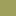

<!doctype html>
<html lang="en">
    <head>
        <meta charset="utf-8">
        <meta http-equiv="X-UA-Compatible" content="IE=edge">
        <meta name="viewport" content="initial-scale=1,user-scalable=no,maximum-scale=1,width=device-width">
        <meta name="mobile-web-app-capable" content="yes">
        <meta name="apple-mobile-web-app-capable" content="yes">
        <link rel="stylesheet" href="css/leaflet.css">
        <link rel="stylesheet" href="css/qgis2web.css"><link rel="stylesheet" href="css/fontawesome-all.min.css">
        <link rel="stylesheet" href="css/leaflet-measure.css">
        <style>
        html, body, #map {
            width: 100%;
            height: 100%;
            padding: 0;
            margin: 0;
        }
        </style>
        <title>300 meters to Northampton open space</title>
    </head>
    <body>
        <div id="map">
        </div>
        <script src="js/qgis2web_expressions.js"></script>
        <script src="js/leaflet.js"></script>
        <script src="js/leaflet.rotatedMarker.js"></script>
        <script src="js/leaflet.pattern.js"></script>
        <script src="js/leaflet-hash.js"></script>
        <script src="js/Autolinker.min.js"></script>
        <script src="js/rbush.min.js"></script>
        <script src="js/labelgun.min.js"></script>
        <script src="js/labels.js"></script>
        <script src="js/leaflet-measure.js"></script>
        <script src="data/Cityoutline_1.js"></script>
        <script src="data/Publicopenspace05ha_2.js"></script>
        <script src="data/300mfromaccess_3.js"></script>
        <script src="data/Access_points_4.js"></script>
        <script>
        var map = L.map('map', {
            zoomControl:true, maxZoom:28, minZoom:1
        })
        var hash = new L.Hash(map);
        map.attributionControl.setPrefix('<a href="https://github.com/tomchadwin/qgis2web" target="_blank">qgis2web</a> &middot; <a href="https://leafletjs.com" title="A JS library for interactive maps">Leaflet</a> &middot; <a href="https://qgis.org">QGIS</a>');
        var autolinker = new Autolinker({truncate: {length: 30, location: 'smart'}});
        function removeEmptyRowsFromPopupContent(content, feature) {
         var tempDiv = document.createElement('div');
         tempDiv.innerHTML = content;
         var rows = tempDiv.querySelectorAll('tr');
         for (var i = 0; i < rows.length; i++) {
             var td = rows[i].querySelector('td.visible-with-data');
             var key = td ? td.id : '';
             if (td && td.classList.contains('visible-with-data') && feature.properties[key] == null) {
                 rows[i].parentNode.removeChild(rows[i]);
             }
         }
         return tempDiv.innerHTML;
        }
        document.querySelector(".leaflet-popup-pane").addEventListener("load", function(event) {
          var tagName = event.target.tagName,
            popup = map._popup;
          // Also check if flag is already set.
          if (tagName === "IMG" && popup && !popup._updated) {
            popup._updated = true; // Set flag to prevent looping.
            popup.update();
          }
        }, true);
        var measureControl = new L.Control.Measure({
            position: 'topleft',
            primaryLengthUnit: 'meters',
            secondaryLengthUnit: 'kilometers',
            primaryAreaUnit: 'sqmeters',
            secondaryAreaUnit: 'hectares'
        });
        measureControl.addTo(map);
        document.getElementsByClassName('leaflet-control-measure-toggle')[0]
        .innerHTML = '';
        document.getElementsByClassName('leaflet-control-measure-toggle')[0]
        .className += ' fas fa-ruler';
        var bounds_group = new L.featureGroup([]);
        function setBounds() {
            if (bounds_group.getLayers().length) {
                map.fitBounds(bounds_group.getBounds());
            }
        }
        map.createPane('pane_Streets_0');
        map.getPane('pane_Streets_0').style.zIndex = 400;
        var layer_Streets_0 = L.tileLayer('https://tile.openstreetmap.org/{z}/{x}/{y}.png', {
            pane: 'pane_Streets_0',
            opacity: 1.0,
            attribution: '',
            minZoom: 1,
            maxZoom: 28,
            minNativeZoom: 0,
            maxNativeZoom: 19
        });
        layer_Streets_0;
        map.addLayer(layer_Streets_0);
        function pop_Cityoutline_1(feature, layer) {
            var popupContent = '<table>\
                    <tr>\
                        <td colspan="2">' + (feature.properties['fid'] !== null ? autolinker.link(feature.properties['fid'].toLocaleString()) : '') + '</td>\
                    </tr>\
                    <tr>\
                        <td colspan="2">' + (feature.properties['TOWN_ID'] !== null ? autolinker.link(feature.properties['TOWN_ID'].toLocaleString()) : '') + '</td>\
                    </tr>\
                    <tr>\
                        <td colspan="2">' + (feature.properties['TOWN'] !== null ? autolinker.link(feature.properties['TOWN'].toLocaleString()) : '') + '</td>\
                    </tr>\
                    <tr>\
                        <td colspan="2">' + (feature.properties['TOWN2'] !== null ? autolinker.link(feature.properties['TOWN2'].toLocaleString()) : '') + '</td>\
                    </tr>\
                    <tr>\
                        <td colspan="2">' + (feature.properties['COUSUBFP10'] !== null ? autolinker.link(feature.properties['COUSUBFP10'].toLocaleString()) : '') + '</td>\
                    </tr>\
                    <tr>\
                        <td colspan="2">' + (feature.properties['FIPS_STCO'] !== null ? autolinker.link(feature.properties['FIPS_STCO'].toLocaleString()) : '') + '</td>\
                    </tr>\
                    <tr>\
                        <td colspan="2">' + (feature.properties['COUNTY'] !== null ? autolinker.link(feature.properties['COUNTY'].toLocaleString()) : '') + '</td>\
                    </tr>\
                    <tr>\
                        <td colspan="2">' + (feature.properties['POP1980'] !== null ? autolinker.link(feature.properties['POP1980'].toLocaleString()) : '') + '</td>\
                    </tr>\
                    <tr>\
                        <td colspan="2">' + (feature.properties['POP1990'] !== null ? autolinker.link(feature.properties['POP1990'].toLocaleString()) : '') + '</td>\
                    </tr>\
                    <tr>\
                        <td colspan="2">' + (feature.properties['POP2000'] !== null ? autolinker.link(feature.properties['POP2000'].toLocaleString()) : '') + '</td>\
                    </tr>\
                    <tr>\
                        <td colspan="2">' + (feature.properties['POP2010'] !== null ? autolinker.link(feature.properties['POP2010'].toLocaleString()) : '') + '</td>\
                    </tr>\
                    <tr>\
                        <td colspan="2">' + (feature.properties['POPCH80_90'] !== null ? autolinker.link(feature.properties['POPCH80_90'].toLocaleString()) : '') + '</td>\
                    </tr>\
                    <tr>\
                        <td colspan="2">' + (feature.properties['POPCH90_00'] !== null ? autolinker.link(feature.properties['POPCH90_00'].toLocaleString()) : '') + '</td>\
                    </tr>\
                    <tr>\
                        <td colspan="2">' + (feature.properties['POPCH00_10'] !== null ? autolinker.link(feature.properties['POPCH00_10'].toLocaleString()) : '') + '</td>\
                    </tr>\
                    <tr>\
                        <td colspan="2">' + (feature.properties['HU2010'] !== null ? autolinker.link(feature.properties['HU2010'].toLocaleString()) : '') + '</td>\
                    </tr>\
                    <tr>\
                        <td colspan="2">' + (feature.properties['FOURCOLOR'] !== null ? autolinker.link(feature.properties['FOURCOLOR'].toLocaleString()) : '') + '</td>\
                    </tr>\
                    <tr>\
                        <td colspan="2">' + (feature.properties['TYPE'] !== null ? autolinker.link(feature.properties['TYPE'].toLocaleString()) : '') + '</td>\
                    </tr>\
                    <tr>\
                        <td colspan="2">' + (feature.properties['AREA_ACRES'] !== null ? autolinker.link(feature.properties['AREA_ACRES'].toLocaleString()) : '') + '</td>\
                    </tr>\
                    <tr>\
                        <td colspan="2">' + (feature.properties['SQ_MILES'] !== null ? autolinker.link(feature.properties['SQ_MILES'].toLocaleString()) : '') + '</td>\
                    </tr>\
                    <tr>\
                        <td colspan="2">' + (feature.properties['SHAPE_AREA'] !== null ? autolinker.link(feature.properties['SHAPE_AREA'].toLocaleString()) : '') + '</td>\
                    </tr>\
                    <tr>\
                        <td colspan="2">' + (feature.properties['SHAPE_LEN'] !== null ? autolinker.link(feature.properties['SHAPE_LEN'].toLocaleString()) : '') + '</td>\
                    </tr>\
                </table>';
            layer.bindPopup(popupContent, {maxHeight: 400});
            var popup = layer.getPopup();
            var content = popup.getContent();
            var updatedContent = removeEmptyRowsFromPopupContent(content, feature);
            popup.setContent(updatedContent);
        }

        function style_Cityoutline_1_0() {
            return {
                pane: 'pane_Cityoutline_1',
                opacity: 1,
                color: 'rgba(35,35,35,1.0)',
                dashArray: '',
                lineCap: 'butt',
                lineJoin: 'miter',
                weight: 3.0, 
                fillOpacity: 0,
                interactive: false,
            }
        }
        map.createPane('pane_Cityoutline_1');
        map.getPane('pane_Cityoutline_1').style.zIndex = 401;
        map.getPane('pane_Cityoutline_1').style['mix-blend-mode'] = 'normal';
        var layer_Cityoutline_1 = new L.geoJson(json_Cityoutline_1, {
            attribution: '',
            interactive: false,
            dataVar: 'json_Cityoutline_1',
            layerName: 'layer_Cityoutline_1',
            pane: 'pane_Cityoutline_1',
            onEachFeature: pop_Cityoutline_1,
            style: style_Cityoutline_1_0,
        });
        bounds_group.addLayer(layer_Cityoutline_1);
        map.addLayer(layer_Cityoutline_1);
        function pop_Publicopenspace05ha_2(feature, layer) {
            var popupContent = '<table>\
                    <tr>\
                        <th scope="row">area_acres</th>\
                        <td>' + (feature.properties['area_acres'] !== null ? autolinker.link(feature.properties['area_acres'].toLocaleString()) : '') + '</td>\
                    </tr>\
                    <tr>\
                        <td colspan="2">' + (feature.properties['SITE_NAME'] !== null ? autolinker.link(feature.properties['SITE_NAME'].toLocaleString()) : '') + '</td>\
                    </tr>\
                    <tr>\
                        <td colspan="2">' + (feature.properties['ALT_SITE_N'] !== null ? autolinker.link(feature.properties['ALT_SITE_N'].toLocaleString()) : '') + '</td>\
                    </tr>\
                    <tr>\
                        <td colspan="2">' + (feature.properties['AV_LEGEND'] !== null ? autolinker.link(feature.properties['AV_LEGEND'].toLocaleString()) : '') + '</td>\
                    </tr>\
                </table>';
            layer.bindPopup(popupContent, {maxHeight: 400});
            var popup = layer.getPopup();
            var content = popup.getContent();
            var updatedContent = removeEmptyRowsFromPopupContent(content, feature);
            popup.setContent(updatedContent);
        }

        function style_Publicopenspace05ha_2_0() {
            return {
                pane: 'pane_Publicopenspace05ha_2',
                stroke: false, 
                fill: true,
                fillOpacity: 1,
                fillColor: 'rgba(158,160,92,0.514)',
                interactive: true,
            }
        }
        map.createPane('pane_Publicopenspace05ha_2');
        map.getPane('pane_Publicopenspace05ha_2').style.zIndex = 402;
        map.getPane('pane_Publicopenspace05ha_2').style['mix-blend-mode'] = 'normal';
        var layer_Publicopenspace05ha_2 = new L.geoJson(json_Publicopenspace05ha_2, {
            attribution: '',
            interactive: true,
            dataVar: 'json_Publicopenspace05ha_2',
            layerName: 'layer_Publicopenspace05ha_2',
            pane: 'pane_Publicopenspace05ha_2',
            onEachFeature: pop_Publicopenspace05ha_2,
            style: style_Publicopenspace05ha_2_0,
        });
        bounds_group.addLayer(layer_Publicopenspace05ha_2);
        map.addLayer(layer_Publicopenspace05ha_2);
        function pop_300mfromaccess_3(feature, layer) {
            var popupContent = '<table>\
                </table>';
            layer.bindPopup(popupContent, {maxHeight: 400});
            var popup = layer.getPopup();
            var content = popup.getContent();
            var updatedContent = removeEmptyRowsFromPopupContent(content, feature);
            popup.setContent(updatedContent);
        }

        function style_300mfromaccess_3_0() {
            return {
                pane: 'pane_300mfromaccess_3',
                stroke: false, 
                fill: true,
                fillOpacity: 1,
                fillColor: 'rgba(152,125,183,0.5019607843137255)',
                interactive: false,
            }
        }
        map.createPane('pane_300mfromaccess_3');
        map.getPane('pane_300mfromaccess_3').style.zIndex = 403;
        map.getPane('pane_300mfromaccess_3').style['mix-blend-mode'] = 'normal';
        var layer_300mfromaccess_3 = new L.geoJson(json_300mfromaccess_3, {
            attribution: '',
            interactive: false,
            dataVar: 'json_300mfromaccess_3',
            layerName: 'layer_300mfromaccess_3',
            pane: 'pane_300mfromaccess_3',
            onEachFeature: pop_300mfromaccess_3,
            style: style_300mfromaccess_3_0,
        });
        bounds_group.addLayer(layer_300mfromaccess_3);
        map.addLayer(layer_300mfromaccess_3);
        function pop_Access_points_4(feature, layer) {
            var popupContent = '<table>\
                </table>';
            layer.bindPopup(popupContent, {maxHeight: 400});
            var popup = layer.getPopup();
            var content = popup.getContent();
            var updatedContent = removeEmptyRowsFromPopupContent(content, feature);
            popup.setContent(updatedContent);
        }

        function style_Access_points_4_0() {
            return {
                pane: 'pane_Access_points_4',
                radius: 3.999999999999997,
                opacity: 1,
                color: 'rgba(35,35,35,1.0)',
                dashArray: '',
                lineCap: 'butt',
                lineJoin: 'miter',
                weight: 1,
                fill: true,
                fillOpacity: 1,
                fillColor: 'rgba(196,60,57,1.0)',
                interactive: false,
            }
        }
        map.createPane('pane_Access_points_4');
        map.getPane('pane_Access_points_4').style.zIndex = 404;
        map.getPane('pane_Access_points_4').style['mix-blend-mode'] = 'normal';
        var layer_Access_points_4 = new L.geoJson(json_Access_points_4, {
            attribution: '',
            interactive: false,
            dataVar: 'json_Access_points_4',
            layerName: 'layer_Access_points_4',
            pane: 'pane_Access_points_4',
            onEachFeature: pop_Access_points_4,
            pointToLayer: function (feature, latlng) {
                var context = {
                    feature: feature,
                    variables: {}
                };
                return L.circleMarker(latlng, style_Access_points_4_0(feature));
            },
        });
        bounds_group.addLayer(layer_Access_points_4);
            var title = new L.Control();
            title.onAdd = function (map) {
                this._div = L.DomUtil.create('div', 'info');
                this.update();
                return this._div;
            };
            title.update = function () {
                this._div.innerHTML = '<h2>300 meters to Northampton open space</h2>';
            };
            title.addTo(map);
            var abstract = new L.Control({'position':'bottomright'});
            abstract.onAdd = function (map) {
                this._div = L.DomUtil.create('div',
                'leaflet-control abstract');
                this._div.id = 'abstract'
                    this._div.setAttribute("onmouseenter", "abstract.show()");
                    this._div.setAttribute("onmouseleave", "abstract.hide()");
                    this.hide();
                    return this._div;
                };
                abstract.hide = function () {
                    this._div.classList.remove("abstractUncollapsed");
                    this._div.classList.add("abstract");
                    this._div.innerHTML = 'i'
                }
                abstract.show = function () {
                    this._div.classList.remove("abstract");
                    this._div.classList.add("abstractUncollapsed");
                    this._div.innerHTML = 'One guideline for open space planning is that residents should have access to open space of at least 1/2 hectare (about 1.25 acres) within 300 meters.<br /><br />This map shows publicly-accessible open space in Northampton of at least 1/2 ha and locations that are within a 300 m walk of access points to the open space.<br /><br />Open space data from https://northamptonma.gov/932/Make-Maps-flooding-etc. Analysis by Kent S Johnson.<br /><br />Copyright 2024 Kent S Johnson CC BY-NC-SA';
            };
            abstract.addTo(map);
        var baseMaps = {};
        L.control.layers(baseMaps,{' Access_points': layer_Access_points_4,' 300 m from access': layer_300mfromaccess_3,' Public open space > 0.5 ha': layer_Publicopenspace05ha_2,' City outline': layer_Cityoutline_1,"Streets": layer_Streets_0,},{collapsed:false}).addTo(map);L.control.scale({position: 'bottomleft', maxWidth: 100, metric: true, imperial: false, updateWhenIdle: false}).addTo(map);
        setBounds();
        </script>
    </body>
</html>
